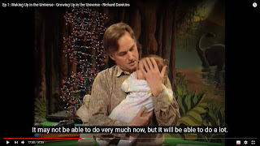

These are few of my recollections about religion.
Professor Clinton Richard Dawkins, was in a documentary titled => Sex, Death and the Meaning of Life (2012)
Regarding "meaning of life", I found that to be rather silly,
because, Samuel Johnson is an 18th century lexicographer,
and I am from Johnson Grammar School, 1997 batch.
However, since my mother died, when I was age_five, in 1987,
the part about finding a place in society, that included Bayesian normality for me,
simply in the context of January 15th New Year, happened to be problematic.
Pythagoras theorem, was a part of school syllabus.
And it was problematic, until I solved it myself, sometime in fifth class.
And four_color_theorem, was not a part of engineering syllabus.
However, I solved it myself, in 2001.
Regarding the circles, Poincare_conjecture, has been established to be true.
I had examined it using Calculus, myself in 2002, and had French in academic transcript in 1997 to 1999.
I believe, growing up, requires a support system.
And being able to participate in the above affirmations,
required some sort of pre-existing inheritance, that I could be a part of.
In India, there is Hinduism, and Buddhism, and Sikhism.
And also, quite a lot of poverty.
I was not fortunate, to have a proper support system.
And also, I got put through some violence by the Muslims.
At age_16, I had suicide plans,
and I had a step-mother, since age_7,
and I asked in 2007 and 2011, and found out that the step-mother happens to be a narcissist.
It certainly, affected my career plans.
So, I choose not to have 'altruism' or 'socialism' involving 'females',
and in my opinion, capitalism, has been portrayed in That Touch of Mink (1962).
I have lived in USA, and am aware of "In God we trust" readable on their currency notes,
and I am not a citizen there, though my Feb 22nd birthday, happens to be relevant to them.
I have seen The Homesman (2014), and would say that 'god',
is a good travel insurance, that even Florence Nightingale participated with.
However, in a war, a geometric series proof of convergence, would be more valuable while communicating with the opponents.
{kind=link}
I asked in 2007, and 2011, and found out that step-mother is a narcissist.
I asked in 2009, and found out that I was living with a male-narcissist in USA.
In the context of May 25th, atheist Towel Day, I would choose to vote, pro-atheist.
In the context of Feb 14th, valentine's day involving Martha Stewart, I would choose to vote, anti-feminist.
And May one two, is the birthday of Florence Nightingale, and I sometimes eat a cake or a pastry, this day.
I spent some time in North India, trekking alone, in 2003.
I also spent some time at the following Gurudwara.
https://en.wikipedia.org/wiki/Gurdwara_Karamsar_Rara_Sahib
I believe, humanity goes through natural calamities,
such as the Indian ocean tsunamis, and Katrina Hurricane.
Also, Fukushima Daiichi nuclear disaster.
And some sort of the above gurudwara, infrastructure is quite helpful, during these instances.
It was basically, a community kitchen.
In very much, the same context, I happen to like the Seventh_day_Adventist Church.
Church-Turing thesis, has a Wikipedia page. (link)
It feels healthy, to be part of a, supportive community.
I did not like growing up with a step-mother, that was a narcissist.
Julia Eileen Gillard, has mentioned that she grew up in Baptist traditions.
In my opinion, baptism, is about guiding others about good hygiene,
like taking a bath, how to make soap, maintain a calendar, and cook well.
Sean Michael Carroll, was born into the Episcopalian branch of community, that was colonising America.
And occasionally, has conducted, 'moving Naturalism Forward'.
A good infrastructure, is needed to protect oneself against the elements.
And also, meditation is quite beneficial.
{kind=link}
| Justine was learning, that this an eight planet Solar System. |
{kind=link}
Mr and Mrs. Leonhard Euler, were involved in the usual relationships.
Justine Shapiro is a woman, and I am a male-heterosexual.
Regarding "death" being a great leveller, I am not very keen about it.
I know that everyone is supposed to die.

I would rather want to participate in a healthy New Year plan.
I don't like a deterministic portrayal of poverty, to be fashionable, by bullies,
who are keen on making others poor.
India has a lot of plagiarism, and I came up with the term 'fake news', in 2003,
in the context of war, where Prime Minister Benazir Bhutto died,
and Donald Trump did not have accreditation, for his educational institute.
Life involves curiosity, research, Dragon Ball Z, zeno's paradox, and working on abilities, while living.
The Language Instinct, is quite an important part of shaping the identity.
http://audiobookbay.nl/audio-books/tag/language-instinct/
I would like for a place, where I can go out jogging, and maybe occasionally spend some time at the beach.
I don't like the word "entertaining", in context of Gladiator movie, or American History X (1998);
where there are trying to competitively entertain each other.
I prefer "being amused", as a past present tense.
Something like in Witness (1985).
https://www.technologyreview.com/2014/10/20/169899/isaac-asimov-asks-how-do-people-get-new-ideas/
The percolation_algorithm book would be quite relevant.
===========================================
To,
Professor Alice Roberts.
| May two three, 2020 Anno Domini |
{kind=link}
I like that, the 'patronus charm' of Professor Severus Snape;
happens to be a 'doe', about 'does';
instead of, 'old money' horse carriage, like James_potter.
And I, like that Charles Darwin, was on the currency notes,
and that Alan Turing will be on the currency notes in the future.
I came up with the following, source_code,
as an eighth class, student.
for i in {a..d};
do
echo "Angle within a regular polygon of $i-sides = [($i-2)/$i]*(pi); while summation = 1 + 2 + 3 + ... + ($i-1) + $i = $i*($i+1)/2;";
done
Angle within a regular polygon of a-sides = [(a-2)/a]*(pi); while summation = 1 + 2 + 3 + ... + (a-1) + a = a*(a+1)/2;
Angle within a regular polygon of b-sides = [(b-2)/b]*(pi); while summation = 1 + 2 + 3 + ... + (b-1) + b = b*(b+1)/2;
Angle within a regular polygon of c-sides = [(c-2)/c]*(pi); while summation = 1 + 2 + 3 + ... + (c-1) + c = c*(c+1)/2;
Angle within a regular polygon of d-sides = [(d-2)/d]*(pi); while summation = 1 + 2 + 3 + ... + (d-1) + d = d*(d+1)/2;
https://en.wikipedia.org/wiki/Transcendental_number
{kind=link}
Generally speaking, Professor Sybill Trelawney, is a female professor, age_28_plus.
And Season_6, Episode_19, of Everybody Loves Raymond,
has a mention of fallopian-tubes, inside a female.
https://en.wikipedia.org/wiki/Who_Watches_the_Watchers
This is my favorite episode.
https://phys.org/news/2020-03-fruit-nature-nurture-responsible-individuality.html
"Fruit fly study, suggests, neither nature nor nurture, is responsible for individuality."
https://science.sciencemag.org/content/368/6493/eaax9553
Social determinants of health and survival in humans and other animals
https://www.youtube.com/results?search_query=why+underdogs+do+better+in+hockey
So, political consultant "convinced_atheist Harry",
necessarily meets, "convinced_atheist Sally",
over two_empty_dinner_plates ...
https://www.quantamagazine.org/why-sex-biologists-find-new-explanations-20200423
while fallopian-tubes are inside Mrs. Hillary Rodham Clinton,
while Julia Gillard keeps learning that,
tan (pie_by_four) is not a prime number,
when the date is January seventh.
This would be "gerontology" and "epistemology",
while "scientists" of the_last_samurai,
and last_of_the_mohicans,
ascertain that Fermat's Last Theorem, has been solved.
OK, then, bye.
N K Kumar (convinced atheist)
postscript:
I do not like that, the daughter of Julius Robert Oppenheimer, has committed suicide, and have read her suicide letter myself, previously.
And I choose to participate in the following =>
International Campaign to Abolish Nuclear Weapons (ICAN)
https://cruxnow.com/vatican/2020/05/in-new-biography-pope-benedict-says-world-threatened-by-humanism/
In my opinion, capitalism, has been portrayed in That Touch of Mink (1962).
===========================================
Instead of "meaning of life", there should be "a sense of purpose",
because one should not pay taxes,
for some "infinite altruism", about going around in circles,
while plural number of Pythagorean triples can exist, at the same time.
Regarding the fourth vowel, four_colour_theorem has been solved.
And the fifth vowel exists inside museum and publisher.
So, a publisher, will publish the location of a museum.
The Golden Ratio Is BS (Kinda) | Answers With Joe
https://youtu.be/73xCxHv2sXo
While growing up, I heard a lot of Indian religious preachers,
talk about ego, and "I", and how the ego should be lowered,
and how the "meek will inherit, the world ..."
I found that they do not have an engineering degree,
and are illiterate about Euler's Identity, energy, and other such things.
===========================================
Regarding age_16, suicide plans,
I had chose to move out of that context,
by signing up for French in my academic transcript, in 1997.
And by the early spring of 1999,
I was alive, and happy,
and had plans,
that the Kilogram weight can be defined involving Planck's constant.
| The road ahead, involves NTFS file systems. |
{kind=link}
And strangely, I talked then,
that one of the reasons for taking French Language,
was that it was a part of the noun, of Melinda Gates.
I use Linux, most of the time, and Windows occasionally,
but I am thankful for Bill and Melinda, for humanitarian reasons ...
So, generally That Touch of Mink (1962),
is about both, Capitalism and Vegetarianism,
while tan(pie_by_four) is not a prime number.
https://youtu.be/VYH87V6EHrk?t=100
Privacy In France: A Lot Of French People Might Be About To Sue Me
In some ways, religion, is just about the privacy of the individual,
and I have visited Paris in 2006, Anno Domini, and it was a good place,
and the cost of a decent percolation_algorithm_book, might be 40 Euros.
{kind=link}
Professor C R Dawkins, on twitter =>
Started reading Matt Ridley’s new book, Innovation, and can’t stop. So gripping, it’s hard to pause even to write this appreciation. Master story-teller. Fascinating, well-researched historical tales light up his thesis that innovations are not sparks of genius but evolve.
The full title is "How Innovation Works – and why it flourishes in freedom". Possibly the subtitle will seem to sit uneasily with – or resonate with – your politics. All the more reason to read the book itself. To do so will be a pleasure in any case.
“Clergymen forbade their parishioners from eating potatoes in England as late as the early 18th century, for the magnificently stupid reason that they are not mentioned in the Bible. Somehow . . . the English turned this into a belief that potatoes were Roman Catholic agents.”
{kind=link}
As a school student, I might have said that,
innovation requires tinkering with design, and plans.
After engineering certificate, I would say that,
innovation involves, error-correction, and an iterative learning process.
============================
I read up on the Stalin and Lenin, communications, as an engineering student, before 2003.
"God's not unjust, he doesn't actually exist.
We've been deceived. If God existed, he'd have made the world more just... I'll lend you a book and you'll see. "
-- A teenaged Stalin after reading The Origin of Species by Charles Darwin,
as quoted in Young Stalin (2007) by Simon Sebag Montefiore, p. 49
|  |
| Professor Clinton R Dawkins, raising a child. |
{kind=link}
All This Noise Is KILLING Me!
https://youtu.be/ZJE2NKhuU1k
Plants Are Way Cooler Than We Give Them Credit For
In my case, the religious noise polluters,
were looking for "infinite altruism",
and I have been through some suicide instance,
like Jenny at a roadside, looking for harmony, in Forrest Gump movie.
=====================================
https://en.wikipedia.org/wiki/Adass_Israel_School_sex_abuse_scandal
I did not attend prom in 1997,
The cause of,
plagiarism, and narcissist proliferation,
at education,
happens to be "greatest-prom-queen rachel-karen-green"
four_colour_theorem, has been solved,
and Poincare_conjecture, has been established to be true.
https://mentalhealthnewsradionetwork.com/healing-our-addiction-to-the-narcissist-an-interview-with-shahida-arabi1/
" ... A recent study by Haslam and Montrose (2015) ... "
=====================================
Benford's Law,
is applicable
while plural Pythagorean triples,
can happen at the same time,
while four_colour_theorem, has been solved,
with O(n_squared) complexity,
and "percolation" includes,
Poincare_conjecture has been established to be true.
https://www.quantamagazine.org/why-do-matter-particles-come-in-threes-a-physics-titan-weighs-in-20200330/
"infinite altruism" does not exist,
Benford's Law, exists.
Florence Nightingale, is a war participant.
https://www.sciencenews.org/article/florence-nightingale-birthday-power-visualizing-science
https://en.wikipedia.org/wiki/Geometric_series#Proof_of_convergence
"infinite altruism" does not exist
Benford's Law exists
Florence Nightingale, is a war participant.
https://sciencenews.org/article/florence-nightingale-birthday-power-visualizing-science
https://en.wikipedia.org/wiki/Geometric_series#Proof_of_convergence
Tell Juliia Gillard
that harry and sally will meet,
when date is January seventh,
while tan(pie_by_four) is not a prime number.
https://www.nytimes.com/2013/01/27/opinion/sunday/schizophrenic-not-stupid.html
https://en.wikipedia.org/wiki/Elyn_Saks
Professor Sybill Trelawney, is always age_28_plus.
=====================================
Regarding the "death", part,
the 18th century Euler's Identity,
continues, to be an editable context.
So, strategy is better than logic,
and occasionally or regularly, only when alive.
{kind=link}
http://www.abc.net.au/local/stories/2010/07/19/2957248.htm
The first baby kissed this election campaign,
January fourth, wish you a Happy New Year, 2021,
while four_colour_theorem, was solved by myself, in 2001,
as an engineering student, before 2003,
And I was a PhD_student,
that wrote PhD_notes in 2005, and 2006, while Pluto was not a planet,
and new learning had to happen ...
... involving Music and Lyrics (2007),
and I wrote some part of that, script, as well.
So, Language Instinct, includes script and editing abilities as well, and not just audio.
OK, then, bye.
tan (pie_by_four), is not a prime_number,
for all "politicians", always__always.
International Campaign to Abolish Nuclear Weapons (ICAN)
Regarding the "death" part,
I had read the suicide letter, by the daughter of Julius Robert Oppenheimer,
during Pope Benedict involvement,
some time, in 2005, 2006, 2007, and for the last time in 2010,
in Brookhaven National Lab.
http://www.openculture.com/2020/05/albert-einstein-explains-why-we-need-to-read-the-classics.html
There is a suicide letter, mentioned here, and Julia Gillard, mentions her noun in her podcast.
http://www.openculture.com/2016/03/virginia-woolf-offers-gentle-advice-on-how-one-should-read-a-book.html
=================================================================
"By all means let's be open-minded, but not so open-minded that our brains drop out."
-- Professor C R Dawkins
"do whatever compels you ..."
-- Joe Rogan, podcast specialist, in an interview with Richard Dawkins
"Also compile, some source code, some time .... when it is, a New Year."
-- anonymous audience
=================================================================
And then regarding the usual grub,
I was happier, to participate in a 'Eulogy' document, in Everybody Loves Raymond.
It is not about 'finding jesus', or 'making peace with god, or Todd' ...
it is about, being useful, while Jenny has to eat harmony, at a road side, in Forrest Gump movie ...
https://www.youtube.com/watch?v=p6yW_lOMCGI&t=50s
Please find the Perspectives on Tort Law (2007), on the home page.
https://en.wikipedia.org/wiki/Todd,_Todd,_Why_Hast_Thou_Forsaken_Me%3F
{kind=link}
{kind=link}
{kind=link}
International Campaign to Abolish Nuclear Weapons (ICAN)
Charles Darwin, will abolish, the grub, related to the readable, suicide letter, by the daughter, of Julius Robert Oppenheimer.
I don't take, my cues, from the suicide of Virginia Woolf (noun).
OK, then, bye.
A Eulogy, is a, much better place, than a suicide letter.
https://en.wikipedia.org/wiki/Everybody_Loves_Raymond_(season_7)
My answer is (50 minus 31), because, I was watching Everybody Loves Raymond.
All the best, with your answer. Harry and Sally, will meet.
Carly Rae Jepsen - Call Me Maybe
{kind=link}
https://www.sciencedaily.com/releases/2019/07/190710103231.htm
Expert mathematicians stumped by simple subtractions
Mathematics is seen as the pinnacle of abstract thinking. But are we capable of filtering out our knowledge about the world to prevent it from interfering with our calculations? Researchers have demonstrated that our ability to solve mathematical problems is influenced by non-mathematical knowledge, which results in mistakes. The findings indicate that high-level mathematicians can be duped by some aspects of their knowledge about the world and fail to solve primary school-level subtraction problems.
To,
convinced_atheist, Julia Eileen Gillard ...
 I have heard your autobiography,
I have heard your autobiography,and I am a convinced_atheist as well.
I am convinced that,
I have solved four_colour_theorem, myself, in 2001,
{kind=link}
even though it was not a part of engineering syllabus.
It was a problem, that could be addressed, and solved, by any gender.
{kind=link}
I do not like the plagiarism, by narcissists,
facilitated by "greatest-prom-queen rachel-karen-green",
so this is not about "women's rights".
{kind=link}
https://pastnotes82.blogspot.com/p/regarding-my-promdate.html
However, this is about Benford's Law,
applicable, involving my prom_date,
because, Harry is a political consultant, in,
When Harry met Sally ...
The "conventional" taxes to be paid,
for a good percolation_algorithm_book, might be forty dollars, or fifty British pounds, or one Alan Turing currency note paper.
OK, then, bye.
Best wishes.